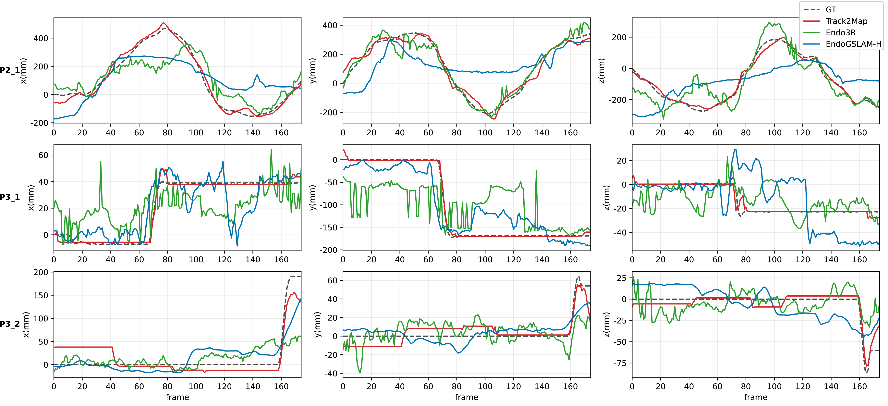
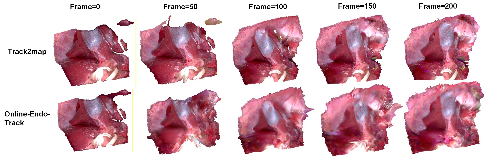
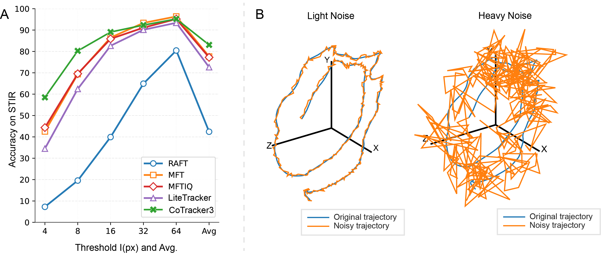

Pose priors optional
Runs with clean, noisy, or absent camera pose priors.
MICCAI 2026
University College London · UCL Hawkes Institute · Intuitive
Track2Map is an online stereo 3D Gaussian Splatting pipeline for deformable surgical scenes. It jointly refines camera trajectory and deformable anatomy, using dense 2D tracks to initialize deformation and to gate pose updates during camera-static periods.
Runs with clean, noisy, or absent camera pose priors.
Reduces drift by avoiding pose updates when tissue/tool motion dominates.
Produces metric deformable 3D Gaussian reconstructions from surgical stereo video.
Method

Results


Demo
If the embedded video does not play in your browser, download the demo video.
Tracking module

BibTeX will be updated once Springer/arXiv metadata is available.
@inproceedings{song2026track2map,
title = {Track2Map: Online Deformable SLAM with Motion-Aware Pose Optimization in Robotic Surgery},
author = {Song, Tianyi and Bonilla, Sierra and Ju, Xinwei and Mazomenos, Evangelos and Stoyanov, Danail and Schmidt, Adam and Mohareri, Omid and Bano, Sophia and Vasconcelos, Francisco},
booktitle = {International Conference on Medical Image Computing and Computer-Assisted Intervention (MICCAI)},
year = {2026}
}